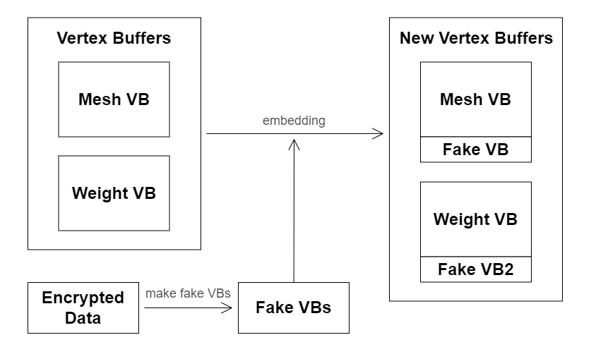
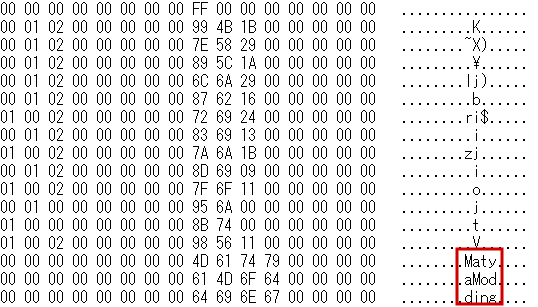
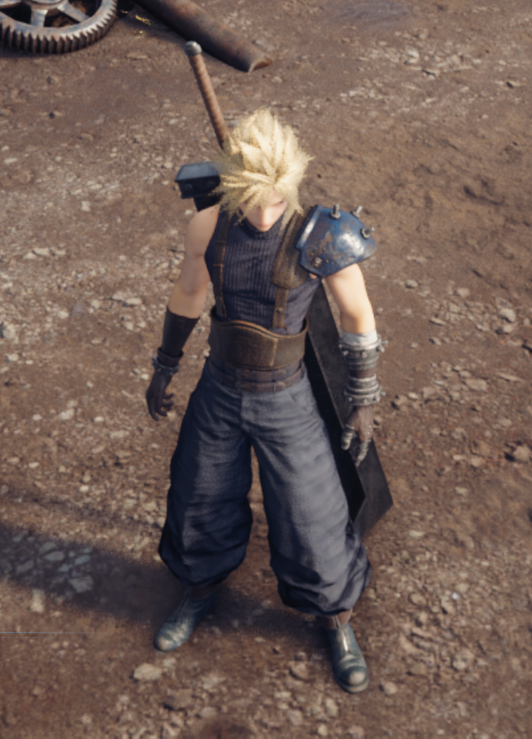
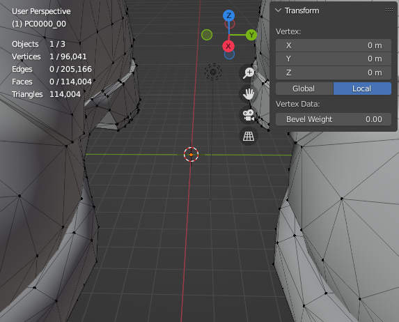

トップ>MOD工房>UE4のモデルデータに自分の名前を刻む
その対策として、ウォーターマークを画像データなどに埋め込む人がいるのですが、ゲームと無関係のロゴが画面に表示されるのはユーザとしては不快なものです。
そこで、ゲーム体験に一切影響を及ぼすことなく3Dモデルに自分の名前を埋め込む方法を思いついたので紹介します。
ただし、僕が何か新しい発見をしたわけではなく、単に「安直な方法だから誰も取り上げていない」ということなのでしょう。
今回紹介する方法は非常にシンプルなもので、埋め込んだ情報は容易に書き換えることができてしまいます。
確実に盗用を防ぎたいのであれば他の方法を使うことをお勧めします。
3Dモデルのウォーターマークに関する研究は3DCGゲームの黎明期から存在しており、例えば以下の研究などがあります。
Watermarking Three-Dimensional Polygonal Models Through Geometric and Topological Modifications
最近の研究では頂点群の分布を利用した手法が多く提唱されており、例えば以下の研究などがあります。
A novel watermarking algorithm for three-dimensional point-cloud models based on vertex curvature
これらは頑健で優れた手法ですが、既存のメッシュデータを書き換える必要があります。
また、アルゴリズムが複雑なので、プログラムの開発に時間がかかります。
以上の理由から既存研究の手法を用いることを諦め、以下に記す単純な手法を採用しました。
新しく生成された頂点は面を持たないので、ゲーム内で表示されることはありません。
下図はその概要になります。
ただし、実際には頂点バッファを弄るだけだとゲームがクラッシュします。
頂点数やデータサイズが記録されている場所も書き換える必要があるので注意が必要です。
下図のようにウェイトバッファに「MatyaModding」という文字列を埋め込みました。
(本当は３つの頂点を追加したのですが、どこかの段階で重複する頂点が削除されてしまったようです。)
容易にデータを書き換えられる心配はありますが、趣味の範疇で使う分にはこのくらい単純な手法で十分だと思います。
データを暗号化したり、偽の頂点データをバッファ全体に分散させるなどして、セキュリティを強化することもできます。
MOD作成の手助けになれば幸いです。
MOD工房
UE4のモデルデータに自分の名前を刻む
このページではMODの3Dモデルデータに自分の名前を埋め込む方法を紹介します。
はじめに
MOD界隈には他人が無料で配布したMODを有料コンテンツとして販売する人が稀に現れます。その対策として、ウォーターマークを画像データなどに埋め込む人がいるのですが、ゲームと無関係のロゴが画面に表示されるのはユーザとしては不快なものです。
そこで、ゲーム体験に一切影響を及ぼすことなく3Dモデルに自分の名前を埋め込む方法を思いついたので紹介します。
ただし、僕が何か新しい発見をしたわけではなく、単に「安直な方法だから誰も取り上げていない」ということなのでしょう。
今回紹介する方法は非常にシンプルなもので、埋め込んだ情報は容易に書き換えることができてしまいます。
確実に盗用を防ぎたいのであれば他の方法を使うことをお勧めします。
関連研究
今回紹介する手法を試す前に、より良い手法を求めて関連研究を調べてみました。3Dモデルのウォーターマークに関する研究は3DCGゲームの黎明期から存在しており、例えば以下の研究などがあります。
Watermarking Three-Dimensional Polygonal Models Through Geometric and Topological Modifications
最近の研究では頂点群の分布を利用した手法が多く提唱されており、例えば以下の研究などがあります。
A novel watermarking algorithm for three-dimensional point-cloud models based on vertex curvature
これらは頑健で優れた手法ですが、既存のメッシュデータを書き換える必要があります。
また、アルゴリズムが複雑なので、プログラムの開発に時間がかかります。
以上の理由から既存研究の手法を用いることを諦め、以下に記す単純な手法を採用しました。
手法
手法はとても単純なもので、「データの保存用に不要な頂点を作成し、その頂点の座標やウェイトにデータを埋め込む」というものです。新しく生成された頂点は面を持たないので、ゲーム内で表示されることはありません。
下図はその概要になります。

埋め込みたいデータから偽の頂点データ(fake VBs)を作成し、既存の頂点バッファにくっつけます。ただし、実際には頂点バッファを弄るだけだとゲームがクラッシュします。
頂点数やデータサイズが記録されている場所も書き換える必要があるので注意が必要です。
実験
実際にモデルデータを弄ってみました。今回はFF7Rのクラウドを使用します。下図のようにウェイトバッファに「MatyaModding」という文字列を埋め込みました。

ゲームを起動してみると、3Dモデルが問題なく表示されました。これで文字列が埋め込まれたMODの完成です。

今度はMODから3Dモデルのデータを抽出し、Blenderで観察します。

原点に不要な頂点が1つ見つかりました。文字列データを埋め込むために追加した頂点です。(本当は３つの頂点を追加したのですが、どこかの段階で重複する頂点が削除されてしまったようです。)
さいごに
今回は3Dモデルデータに自分の名前を埋め込む方法を紹介しました。容易にデータを書き換えられる心配はありますが、趣味の範疇で使う分にはこのくらい単純な手法で十分だと思います。
データを暗号化したり、偽の頂点データをバッファ全体に分散させるなどして、セキュリティを強化することもできます。
MOD作成の手助けになれば幸いです。